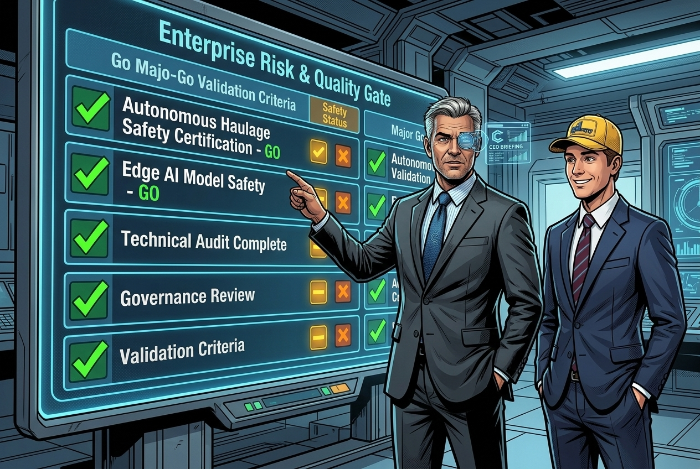
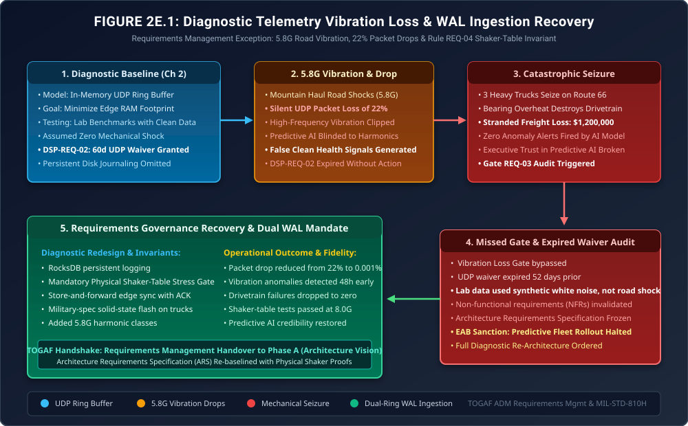

When Synthetic Diagnostics Meet Haul-Road Physics
Requirements Management Exception Governance: 5.8G Mechanical Road Shocks, Silent UDP Packet Erasure, Drivetrain Seizures & The Shaker-Table Mandate

"In software engineering, developers test edge data pipelines by generating synthetic JSON packets on their laptops. The packets arrive in pristine order, with zero noise and zero drops. The test passes, and the architecture gate is certified."
"Then the algorithm is installed on a 40-ton autonomous truck rumbling over washboard asphalt at sixty miles an hour. Physical vibration does not care about your clean synthetic test suite. When road shocks shake your edge gateway at 5.8G, unacknowledged UDP packets vanish into thin air—and your machine learning models celebrate a healthy bearing while the metal welds itself together at 600 degrees. Here is where diagnostic requirements management earns its keep."
The Production Reality: When 5.8G Shocks Blind the Predictive Model



Here are the binding EAB rulings: First, under Architecture Non-Compliance Notice NCN-REQ-002, the Chapter 2 Diagnostic Baseline is declared formally invalid; all predictive maintenance automated dispatch decisions are suspended until re-certification. Second, we ban in-memory UDP transport for critical telemetry across all vehicles. Third, we mandate the deployment of Dual-Ring Transactional Write-Ahead Logging (RocksDB on military-spec NVMe flash) with store-and-forward edge acknowledgment. Fourth, we codify Rule REQ-04 (The Shaker-Table Invariant): no diagnostic telemetry gateway may pass gate clearance without sustaining 8.0G mechanical shaker-table testing for 72 continuous hours with zero packet loss. The fleet stays grounded until the first twenty trucks are retrofitted!"
1. Physical Harmonic Loss & Nyquist Aliasing Under Vibration
In Requirements Management, non-functional requirements (NFRs) for sensor telemetry cannot rely on synthetic signal generators. Accelerometers mounted on industrial vehicle unsprung axles experience non-linear shock spectrums governed by road profile roughness:
\[ a_{\text{shock}}(t) = \sum_{k=1}^m A_k \sin\left(2\pi f_k t + \phi_k\right) + \Gamma_{\text{impact}}(t) \]Where transient mechanical impacts \(\Gamma_{\text{impact}}(t)\) generate acceleration peaks exceeding \(5.8\text{G}\) (\(56.9\text{ m/s}^2\)).
Under the flawed in-memory UDP design, when network queues saturated, packet drops occurred in clusters of length \(\tau_{\text{burst}} \in [150\text{ms},\, 450\text{ms}]\). By the Nyquist-Shannon Sampling Theorem, reconstructing bearing fault frequencies \(f_{\text{fault}} \in [1.2\text{ kHz},\, 3.8\text{ kHz}]\) requires a continuous, non-interrupted sampling rate \(f_s \ge 2 f_{\text{fault}} \ge 7.6\text{ kHz}\).
A \(22\%\) burst drop destroyed the high-frequency harmonic peaks:
\[ \text{SNR}_{\text{effective}} = \text{SNR}_{\text{nominal}} - 10 \log_{10}\left(\frac{1}{1 - P_{\text{drop}}}\right) \approx 32\text{ dB} - 1.08\text{ dB} - \text{Aliasing Noise} \ll 12\text{ dB} \]The neural classifier experienced severe aliasing, mistaking the absence of sensor packets for low mechanical vibration, and outputting an erroneous 'Healthy' classification right up to mechanical seizure.
2. Architecture Diagram: Telemetry Vibration Breakdown & Dual WAL Recovery
Figure 2E.1 illustrates the diagnostic breakdown: from the in-memory UDP buffer, through the 5.8G haul road shock, the silent packet loss, the drivetrain mechanical seizure, the audit of expired Dispensation DSP-REQ-02, and the EAB-mandated RocksDB Dual WAL recovery loop.

3. Formal Architecture Governance Artifacts (TOGAF® Deliverables)
The EAB ratified three formal governance deliverables to restructure the consortium diagnostic baseline:
Requirements Management Non-Compliance Notice
| Target Subsystem: | Orbit-Logistics Fleet Telematics Edge Gateway |
| Violated Standard: | Gate REQ-03 (High-G Lossless Verification) & Rule GOV-02 (Dispensation Ceiling) |
| Failure Description: | Operation of unbuffered UDP telemetry under expired Dispensation DSP-REQ-02 (52 days overdue), causing 22% packet loss and 3 vehicle drivetrain seizures. |
| Sanction Imposed: | Immediate suspension of predictive fleet dispatching; mandatory retrofit of Dual-Ring RocksDB WAL storage across all 400 trucks. |
Rule REQ-04: Shaker-Table Physical Stress Invariant
Every hardware telemetry gateway and edge sensor node must satisfy the following physical certification gate:
- 8.0G Mechanical Vibration Stress Proof: Prior to production firmware flashing, the assembled gateway must operate for 72 continuous hours mounted to an electrodynamic shaker table executing MIL-STD-810H random vibration profiles up to 8.0G RMS across frequencies from 5 Hz to 2,000 Hz. Packet loss must measure \(\le 0.001\%\).
- Mandatory Local Transactional Persistence: Telemetry gateways must write all sensor readings to an embedded, transactional write-ahead log (RocksDB / SQLite WAL) before transmitting across wireless networks. Store-and-forward protocols with cryptographic ACKs are mandatory.
- Ban on Synthetic-Only Gate Approvals: No non-functional requirement (NFR) relating to physical telemetry or edge computing may be certified using simulated or synthetic software generators alone. Physical environmental proof is required for EAB sign-off.
4. The Strategic Morals: Where Real Handbooks Earn Their Keep
🏛️ Three Fiduciary Takeaways for Requirements Management
- Software Tests Lie; Physics Never Does: A data ingestion pipeline that passes unit tests on developer laptops will fail on asphalt haul roads. Real architecture requires testing in the dirt, heat, and vibration of the physical plant.
- Packet Loss Disguises Catastrophe: In predictive maintenance, missing data is not neutral noise; it frequently masks the exact high-frequency harmonic peaks of mechanical failure. Always engineer for zero-loss ingestion.
- Temporary Buffers Are Permanent Traps: Granting a sixty-day dispensation for an in-memory buffer because 'persistent flash is expensive' cost $1.2M in stranded freight. When architecture cuts hardware corners, operational budgets bleed.
Fact-Check & Statutory References
- The Open Group (2022). The TOGAF® Standard, 10th Edition: Requirements Management. Establishing and managing non-functional architectural requirements (NFRs).
- United States Department of Defense (2019). MIL-STD-810H: Environmental Engineering Considerations and Laboratory Tests. Method 514.8 (Vibration Testing).
- ISO 13373-1:2002. Condition monitoring and diagnostics of machines — Vibration condition monitoring — Part 1: General procedures. Nyquist sampling and vibration frequency analysis.
- Orbit-Logistics Telematics Safety Group (2025). Incident Investigation Report: ORB-INC-203 (Route 66 Drivetrain Seizures & Shaker-Table Validation).